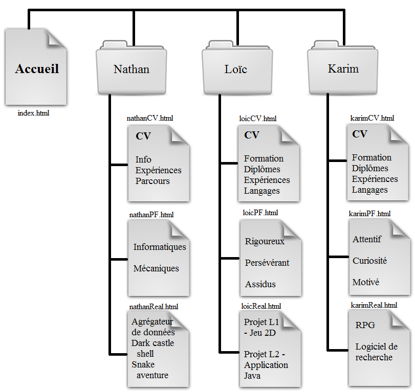

Bienvenue sur le site de l'équipe TVA, composé de Loïc Tramis, Nathan Valentin et Karim Ammour du département Informatique de l'université Cery-Pontoise. Tous étudiants en 2ème année de Licence MI.
Sur ce site, vous trouverez :
